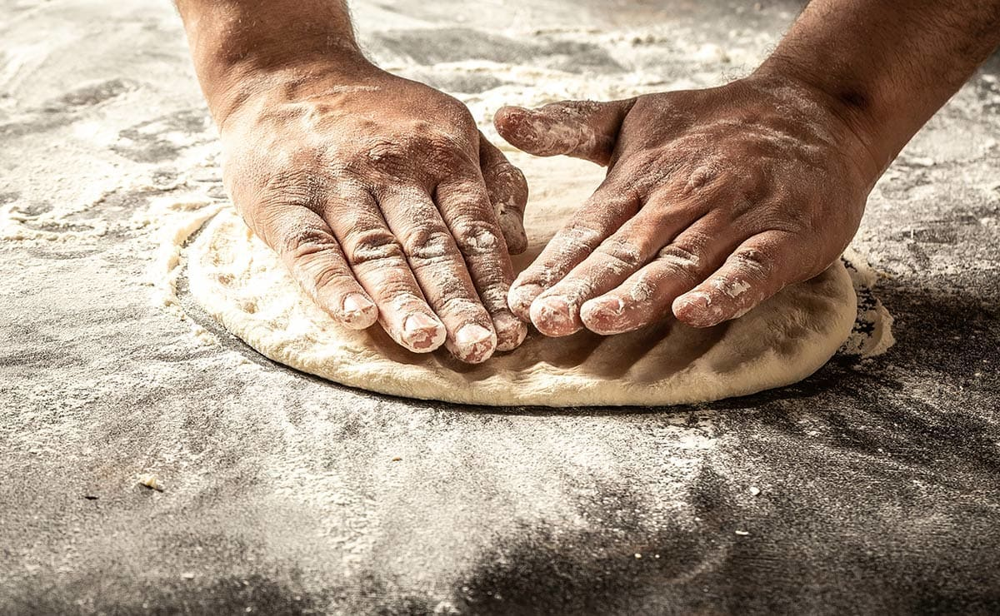
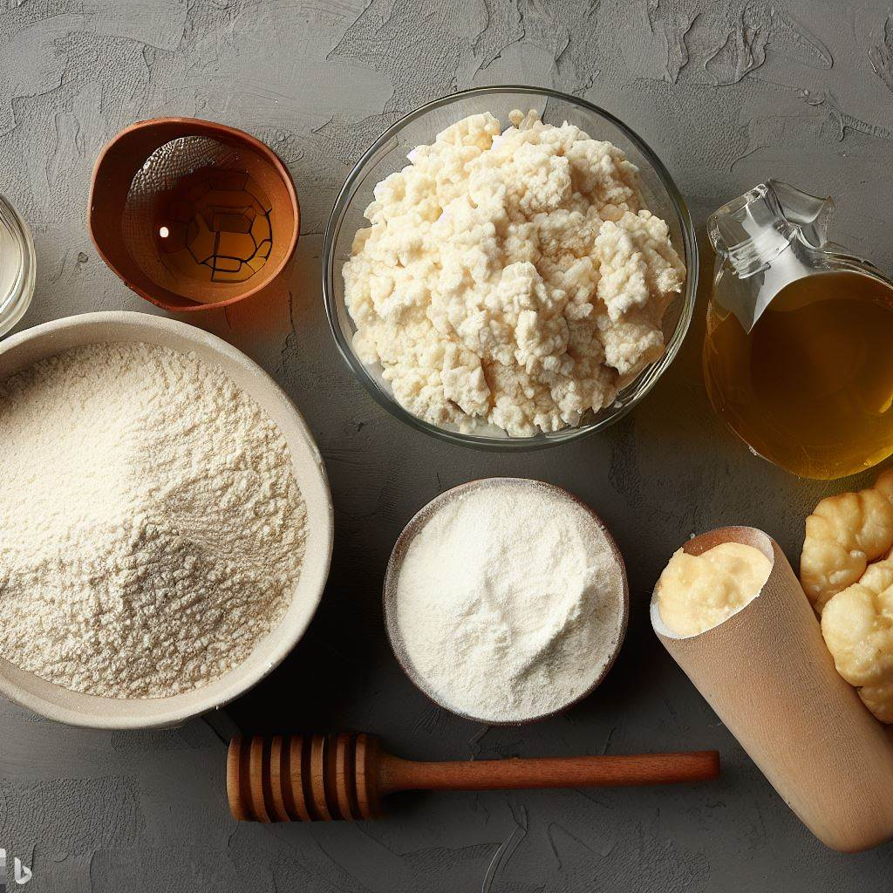
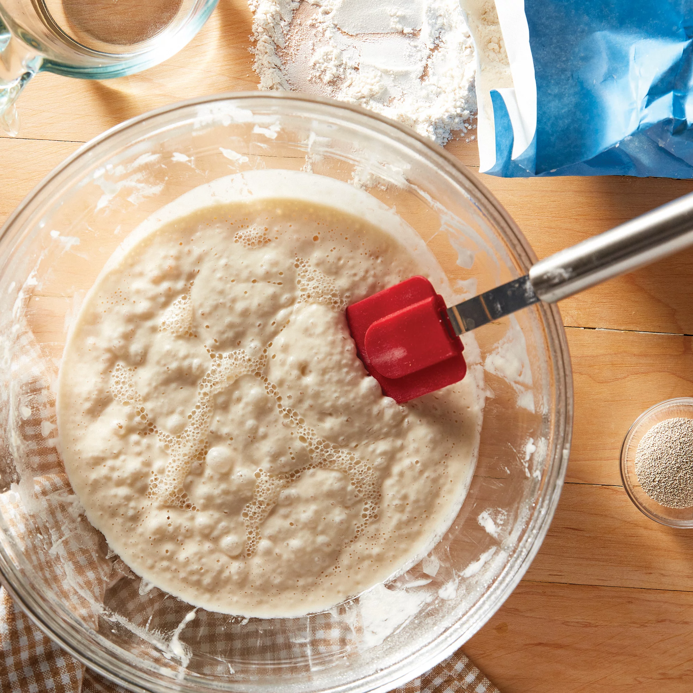
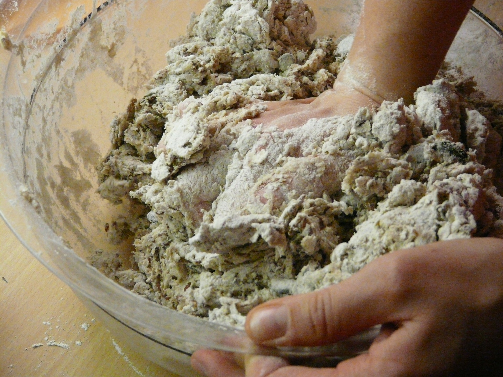
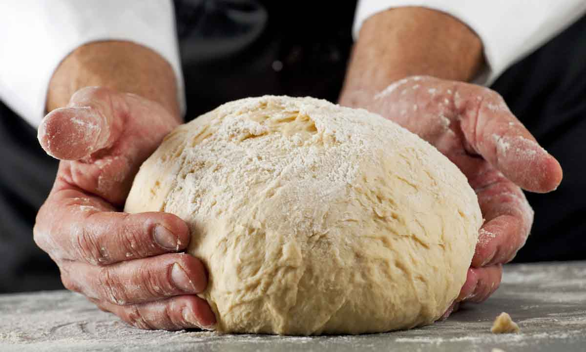

Masa
Al momento de preparar la masa para pizza napolitana es muy importante tener en claro que, si bien los ingredientes son pocos, la exactitud en la técnica y la calidad de los mismos es CLAVE para que la masa salga perfecta.


Ingredientes
A continuación detallamos los ingredientes que necesitaremos para realizar 5 PIZZAS de 340 gramos que es el estandar recomendado y fácil de calcular:
 1 KG DE HARINA DE
FUERZA
1 KG DE HARINA DE
FUERZA- 700 gr DE AGUA
- 5 gr DE LEVADURA
SECA
- 5 gr DE MIEL (O
EXTRACTO DE
MALTA)
- 24 gr DE SAL
PROCEDIMIENTO
72 Horas Antes
Poolish
Para comenzar vamos a utilizar un PRE-FERMENTO como el título indica llamado poolish. El mismo se trata de una técnica para darle más sabor a la masa.
- Mezclamos en un bowl 300 gr de harina de fuerza con 300 gr de agua, la levadura seca y la miel.
- Una vez que queda todo integrado se tapa con un film o tapa y se deja 1 hora a temperatura ambiente.
- Luego lo llevamos a la heladera por 24 horas.

48 Horas Antes
Amasado
Ya listo nuestro Poolish vamos a utilizarlo para crear el resto de la masa. El procedimiento es el siguiente:
- Ponemos en un bowl nuestro poolish e incorporamos unos 100 gr de agua. Lo incorporamos con una espatula o cuchara, si tenemos amasadora tipo Kitchen Aid mucho mejor.
- Una vez que quedó todo como un fermento más liquido, agregamos los 700 gr de harina y la sal. Comenzamos a incorporar todo y vamos de apoquito agregando agua a medida que vaya necesitando. La idea es que la masa vaya absorviendo el agua de a poco
- Cuando vemos que está incorporado todo un TIP es dejar la masa en el bowl unos 30 minutos para que termine de formar el gluten y luego sea mas facil realizar el siguiente paso.
- Luego terminamos el proceso realizando nuestro AMASADO FRANCÉS (VER VIDEO) y lo llevamos a un bowl previamente aceitado con un film por 48 horas a la heladera.

¡Llego el Día!
Armado de Bollos
El día que vamos a cocinar nuestras pizzas unas 4 horas antes vamos a armar nuestros bollos. Los mismos hay que pesarlos (340 gr c/u) y bollarlos según la técnica de la guillotina explicada en el video.
Luego los disponemos en una fuente con un poco de harina y los tapamos con un papel film hasta que estén listos. Demoran según la temperatura del ambiente unas 3 a 4 horas en estar listos. Si ves que ya están y falta tiempo podés meter la bandeja en la heladera para evitar que se sobre-fermenten.
